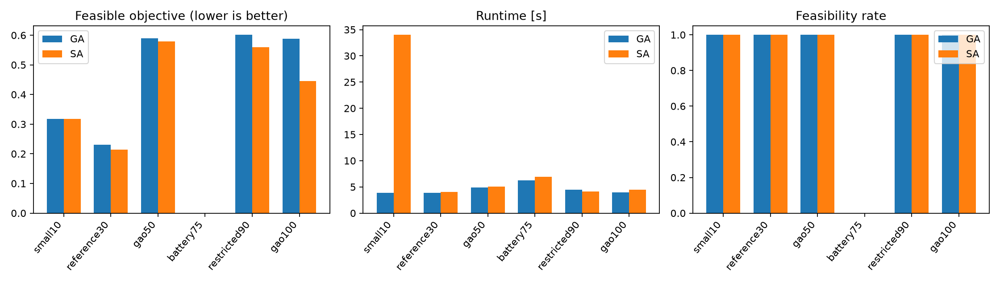
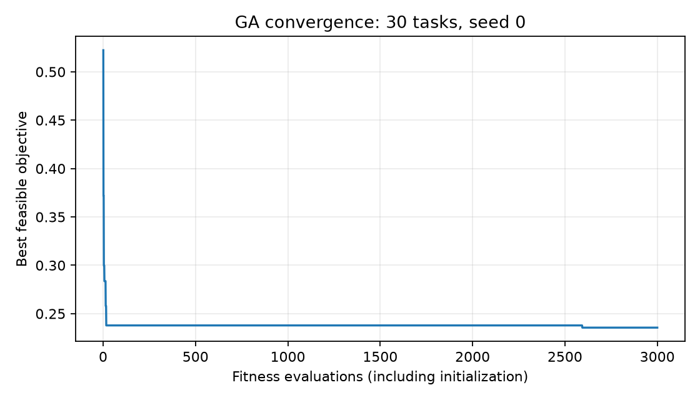
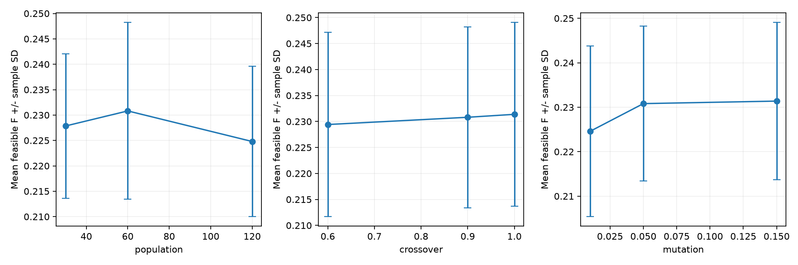
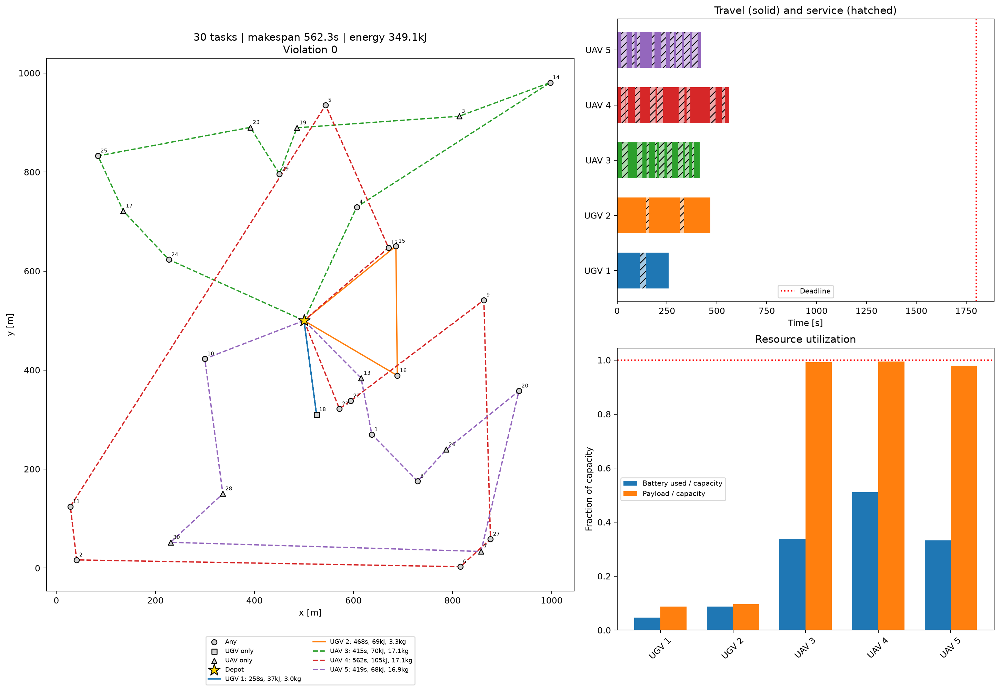
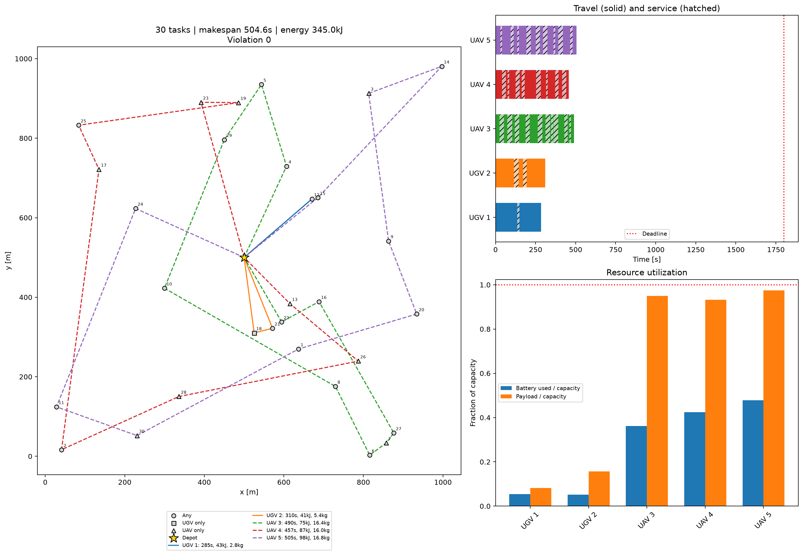

Milestone 4 working report · 8 November 2026
Allocate and sequence tasks for a mixed UAV/UGV fleet. Minimize mission makespan and total energy while enforcing capability, payload, battery and deadline constraints. Both solvers use the same normalized scalar objective with equal time and energy weights.
The GA uses 60 random-key chromosomes, three-way tournaments, uniform crossover (0.9), per-gene reset mutation (0.05), capability repair and two elites. Half the initial population uses randomized insertion. Feasible candidates outrank infeasible candidates. Every evaluated chromosome counts toward the budget.
Five solver seeds per configuration, fixed problem seed zero and 3000 evaluation upper bound. SA construction and calibration are included. SA can use fewer evaluations when proposals fail, and caches route calculations. Runtime is therefore reported alongside work counts. Exact validation cases have a 10000-second deadline; scale cases retain their prior deadlines. Full inputs and per-run routes are supplied in JSON.

| Case | Solver | Feasible | Mean F | Makespan (s) | Energy (kJ) | Runtime (s) | Gap (%) |
|---|---|---|---|---|---|---|---|
| battery75 | GA | 0% | No feasible result | No feasible result | No feasible result | 6.2279 | No feasible result |
| battery75 | SA | 0% | No feasible result | No feasible result | No feasible result | 6.9173 | No feasible result |
| crossover_0.6 | GA | 100% | 0.2294 | 546.5760 | 341.2071 | 1.4322 | No feasible result |
| crossover_0.9 | GA | 100% | 0.2308 | 553.6840 | 338.6629 | 1.4812 | No feasible result |
| crossover_1.0 | GA | 100% | 0.2314 | 559.2420 | 334.3584 | 1.5370 | No feasible result |
| exact6 | GA | 100% | 0.2252 | 1261.0442 | 262.9254 | 1.6738 | 0.0000 |
| exact6 | SA | 100% | 0.2252 | 1261.0442 | 262.9254 | 3.9443 | 0.0000 |
| exact7 | GA | 100% | 0.2821 | 1919.2371 | 315.2934 | 1.6266 | 0.0000 |
| exact7 | SA | 100% | 0.2821 | 1919.2371 | 315.2934 | 2.9316 | 0.0000 |
| gao100 | GA | 100% | 0.5876 | 1791.9541 | 1060.5556 | 3.9857 | No feasible result |
| gao100 | SA | 100% | 0.4454 | 1154.4818 | 1472.0676 | 4.4838 | No feasible result |
| gao50 | GA | 100% | 0.5902 | 1148.2243 | 743.8740 | 4.8569 | No feasible result |
| gao50 | SA | 100% | 0.5798 | 1130.7648 | 723.2159 | 5.0514 | No feasible result |
| mutation_0.01 | GA | 100% | 0.2246 | 535.3048 | 333.7002 | 1.3806 | No feasible result |
| mutation_0.05 | GA | 100% | 0.2308 | 553.6840 | 338.6629 | 1.5944 | No feasible result |
| mutation_0.15 | GA | 100% | 0.2314 | 559.2420 | 334.3584 | 3.0383 | No feasible result |
| population_120 | GA | 100% | 0.2248 | 544.2621 | 323.7058 | 1.6747 | No feasible result |
| population_30 | GA | 100% | 0.2278 | 520.9446 | 365.6201 | 1.2581 | No feasible result |
| population_60 | GA | 100% | 0.2308 | 553.6840 | 338.6629 | 1.5361 | No feasible result |
| reference30 | GA | 100% | 0.2308 | 553.6840 | 338.6629 | 3.8375 | No feasible result |
| reference30 | SA | 100% | 0.2146 | 495.7144 | 338.0246 | 4.0388 | No feasible result |
| restricted90 | GA | 100% | 0.6014 | 1790.5416 | 1184.8345 | 4.4260 | No feasible result |
| restricted90 | SA | 100% | 0.5597 | 1545.7381 | 1484.2515 | 4.0891 | No feasible result |
| small10 | GA | 100% | 0.3184 | 747.8917 | 208.2617 | 3.9088 | No feasible result |
| small10 | SA | 100% | 0.3184 | 747.8917 | 208.2617 | 34.0126 | No feasible result |
Means for objective, mission time and energy include feasible runs only. The raw CSV includes all infeasible outcomes and their constraint violations. Sample standard deviations are provided in summary.json.




Assess feasibility before comparing objectives. Compare makespan and energy as the two primary problem-specific indices, with runtime and robustness as additional indices. Exact gaps certify small-case solution quality; no optimality is claimed for larger cases. Repeated solver seeds on one problem instance measure search variation, not generalization across independent instances. Synthetic scale cases are not published benchmark reproductions.
Population, crossover and mutation are varied one factor at a time. A larger population has fewer generations under a fixed evaluation budget. These studies do not identify interactions or a universal parameter choice. The implementation uses NumPy and Matplotlib, which the team confirmed are allowed.
# Milestone 4 Working extension of Team 10 repository snapshot 0bcbe28c39bcb32d48d777a59d795e33bf8b5034. The original synced project references were not changed. This folder is a separate working copy. ## Run Python 3.10+ with NumPy and Matplotlib (as used in Milestone 3): ``` python -m pip install -r requirements.txt python -m unittest discover -s tests python run_milestone4.py --seeds 5 --budget 3000 ``` Results are written under results/milestone4. Increase seeds and budget for a stronger final study. No GA/SA optimization package is used. NumPy and Matplotlib are allowed, as confirmed by the team. ## Algorithm The chromosome contains n allocation keys and n ordering keys. Decoding serves each task exactly once, with implicit depot departure and return. Half of the population uses the previous randomized insertion constructor; half uses random keys. Capability repair resamples incompatible allocation genes only. Resource constraints are evaluated, not silently relaxed. 1. Evaluate the initial population and count every evaluation. 2. Retain the best two chromosomes unchanged. 3. Select each parent by a three-way tournament. 4. Apply uniform crossover with probability 0.9. 5. Independently reset each gene with probability 0.05. 6. Repair capability, evaluate and fill the next generation. 7. Stop at the evaluation budget, including a partial final generation. Feasible solutions rank before infeasible solutions. Feasible individuals minimize F = 0.5*makespan/deadline + 0.5*energy/total_battery. Infeasible individuals first minimize normalized violation, then F. This is a scalar GA, not a Pareto-front algorithm. ## Validation and comparison Exact enumeration on 6- and 7-task instances provides true feasible optima. Report relative gap as 100*(F-Fopt)/Fopt. Six larger cases reuse previous milestone data generation, including battery stress and restricted capability mixes. Five repeated seeds characterize variation on each fixed instance; they do not represent five independent problem instances. Report makespan [s], energy [kJ], feasibility rate, mean objective, sample standard deviation, runtime and evaluations. Report infeasible outcomes explicitly. SA and GA share an evaluation upper bound, with initialization included; SA can use fewer evaluations when proposals fail. Cached SA evaluations cost less than full GA evaluations, so runtime is also reported. Neither algorithm is granted the other's best solution. The parameter study varies population (30/60/120), crossover (0.6/0.9/1.0) and mutation (0.01/0.05/0.15) at fixed budget on the 30-task case. This is one-factor-at-a-time evidence and cannot identify all parameter interactions. Cases labeled after literature scales remain synthetic and must not be presented as published benchmarks. ## Recording outline Record your screen and narrate: introduce the UAV/UGV problem; explain the chromosome and constraints; show ga.py selection/crossover/mutation; run the tests; run the study; show route figures and comparison.png; discuss feasibility, mission time, energy and runtime using RESULTS.md; show parameter results; explain limitations and conclusions. This outline is not a recorded video. ## Submission status GA, repeated study runner, exact validation and generated results are supplied. REPORT.html is a readable working report. A new measured-results chapter is inserted into the existing LaTeX template by build_ga_report.py. Review the combined report before submission: the inherited chapters still describe Milestone 3. The original template's binary images are not included in this text-source working copy. A final compiled report and narrated screen recording remain separate deliverables. After the study, run `python plot_ga_convergence.py`, `python finish_study.py`, `python build_ga_report.py` and `python build_readable_report.py` to refresh the remaining figures and reports. Run finish_study.py only once per fresh study output because it appends its discussion to RESULTS.md.
# Milestone 4 measured results 5 seeds per configuration; evaluation budget 3000. Instance seed 0. Alpha 0.5. | Case | Algorithm | Feasible | Mean F | Mean time (s) | |---|---|---:|---:|---:| | battery75 | GA | 0% | None | 6.228 | | battery75 | SA | 0% | None | 6.917 | | crossover_0.6 | GA | 100% | 0.22941751091549323 | 1.432 | | crossover_0.9 | GA | 100% | 0.23081343601559023 | 1.481 | | crossover_1.0 | GA | 100% | 0.23137848024648724 | 1.537 | | exact6 | GA | 100% | 0.22516961728926738 | 1.674 | | exact6 | SA | 100% | 0.22516961728926738 | 3.944 | | exact7 | GA | 100% | 0.2821297454042614 | 1.627 | | exact7 | SA | 100% | 0.2821297454042614 | 2.932 | | gao100 | GA | 100% | 0.5875840944631816 | 3.986 | | gao100 | SA | 100% | 0.44535965591506355 | 4.484 | | gao50 | GA | 100% | 0.5901681661752564 | 4.857 | | gao50 | SA | 100% | 0.5797902164003522 | 5.051 | | mutation_0.01 | GA | 100% | 0.22457955210906047 | 1.381 | | mutation_0.05 | GA | 100% | 0.23081343601559023 | 1.594 | | mutation_0.15 | GA | 100% | 0.23137848024648724 | 3.038 | | population_120 | GA | 100% | 0.2247949532808752 | 1.675 | | population_30 | GA | 100% | 0.227849258500066 | 1.258 | | population_60 | GA | 100% | 0.23081343601559023 | 1.536 | | reference30 | GA | 100% | 0.23081343601559023 | 3.837 | | reference30 | SA | 100% | 0.2145655857859896 | 4.039 | | restricted90 | GA | 100% | 0.6014147056228437 | 4.426 | | restricted90 | SA | 100% | 0.5597059749786222 | 4.089 | | small10 | GA | 100% | 0.318378088494614 | 3.909 | | small10 | SA | 100% | 0.318378088494614 | 34.013 | Objectives, makespan and energy are summarized over feasible runs only. Infeasible runs remain in runs.csv with their violation. GA uses its full evaluation budget. SA has the same upper bound but may use fewer evaluations when proposal generation fails. Runtime includes construction. Evaluation counts are not identical costs: SA caches unchanged routes. These are synthetic instances, not reproduced literature datasets. Exact small-instance optima provide validation. No universal superiority claim is supported. Parameter studies hold the evaluation budget fixed; larger populations therefore receive fewer generations. ## Interpretation of measured results small10: mean feasible GA objective 0.31838, SA 0.31838; GA is 0.00% lower. Feasibility rates: GA 100%, SA 100%. reference30: mean feasible GA objective 0.23081, SA 0.21457; GA is 7.57% higher. Feasibility rates: GA 100%, SA 100%. gao50: mean feasible GA objective 0.59017, SA 0.57979; GA is 1.79% higher. Feasibility rates: GA 100%, SA 100%. battery75: GA feasibility 0%, SA 0%. No objective comparison is made without feasible solutions; failure to find a feasible solution is not a proof of infeasibility. restricted90: mean feasible GA objective 0.60141, SA 0.55971; GA is 7.45% higher. Feasibility rates: GA 100%, SA 100%. gao100: mean feasible GA objective 0.58758, SA 0.44536; GA is 31.93% higher. Feasibility rates: GA 100%, SA 100%. Among tested population values, 120 had the lowest mean objective (0.22479) on the 30-task instance. This is descriptive evidence from five seeds, not an independently validated tuning recommendation. Among tested crossover values, 0.6 had the lowest mean objective (0.22942) on the 30-task instance. This is descriptive evidence from five seeds, not an independently validated tuning recommendation. Among tested mutation values, 0.01 had the lowest mean objective (0.22458) on the 30-task instance. This is descriptive evidence from five seeds, not an independently validated tuning recommendation.